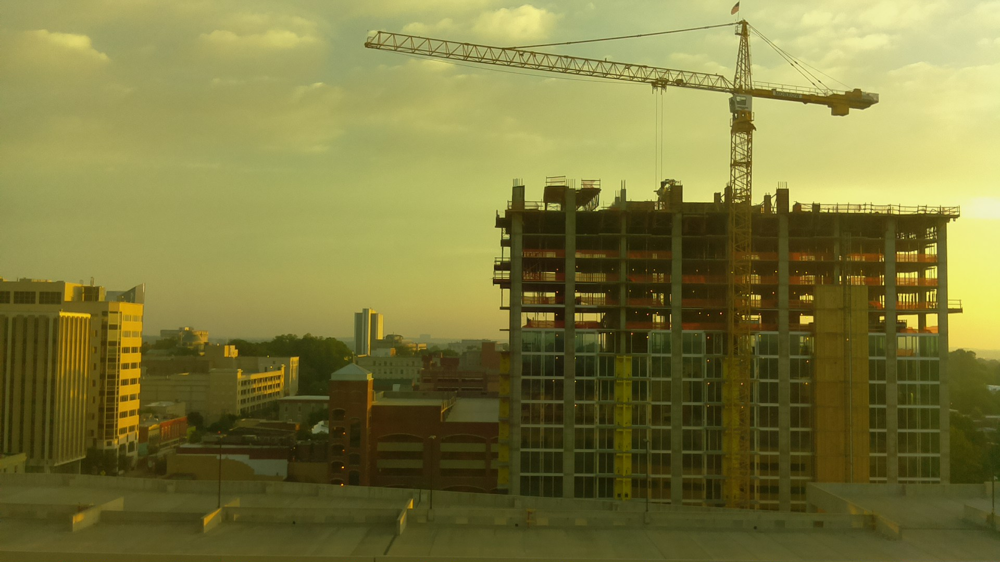

Raspberry Pi Timelapse Camera
I built a timelapse camera with a raspberry pi.
Hardware:
Software:
The scripts I wrote are pretty hasty. I should tidy them up before publishing this post.

I didn’t secure the pi very well when I first framed the shot, and it wound up getting bumped several times. Lesson learned: make sure
File naming
I used Epoch time for the filenames.
1396020890.jpg
1396021196.jpg
1396021502.jpg
1396021808.jpgThis was a spontaneous decision but it turned out to have some unexpected benefits.
Eliminating night-time shots was as simple as doing some modulo math on the time.
Doing some modulo math on the epoch times made isolating the dark hours easy. Since Epoch time is measured in seconds, all we need to know is the number of seconds in a minute, hour, and day.
# number of seconds in a minute/hour/day
minute = 60
hour = 3600
day = 86400Now that we have those values, we can play around with modulo math to find some cool stuff.
The first order of business is to eliminate any photos taken at nighttime,
because they’re all too dark to be useful. Using 1396020890 as an example…
1396020890 % 86400 = 56090
86400 is the number of seconds in a day, and what this operation does is
essentially remove the day/month/year components. What’s left is the time
since the stroke of midnight (still in seconds).
Dividing
time = 1396020890
seconds_after_midnight = time % day # gives us the number of seconds after midnight
hours_after_midnight = (seconds_after_midnight) / hour # gives us the number of hours after midnight
local_hour = hours_after_midnight - 4 # I'm in EST, so -4 GMT
if local_hour < 7 or local_hour > 20: skipLoops vs cron
The script contains an infinite loop with a 5m sleep command. Thus the
pictures weren’t taken every 5 minutes, but rather every 5-and-some-change
minutes. This drift doesn’t matter for intervals several minutes long, or
longer, but if the interval were much shorter, it could be a big problem. An
interval of 5m + 5s drift isn’t a big deal.